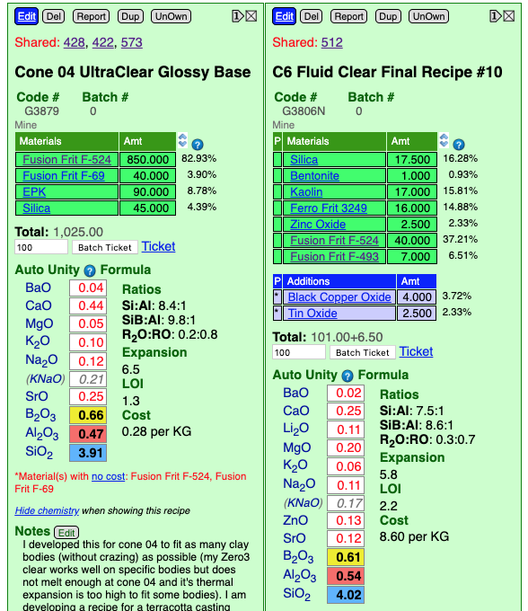
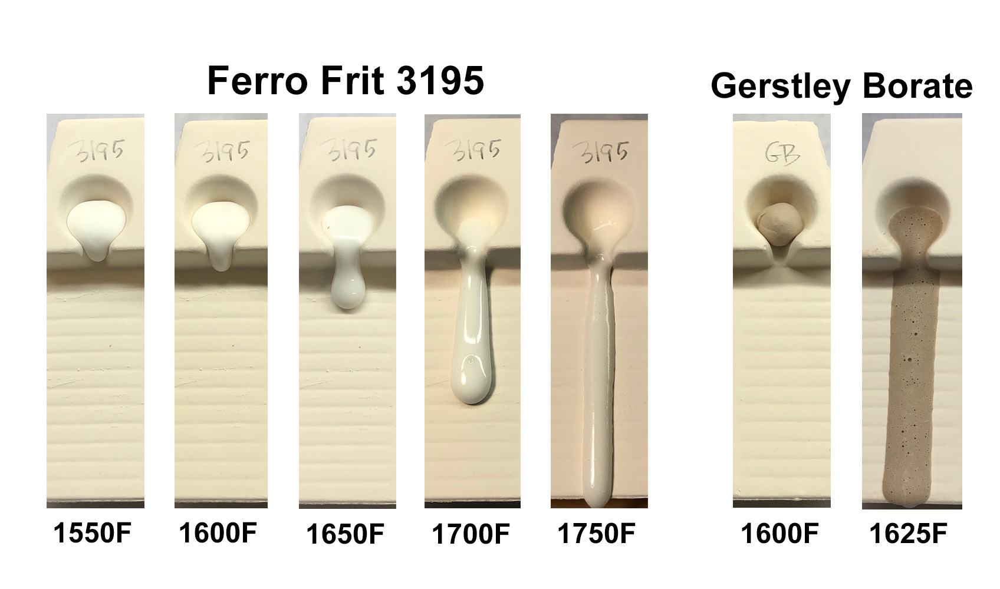
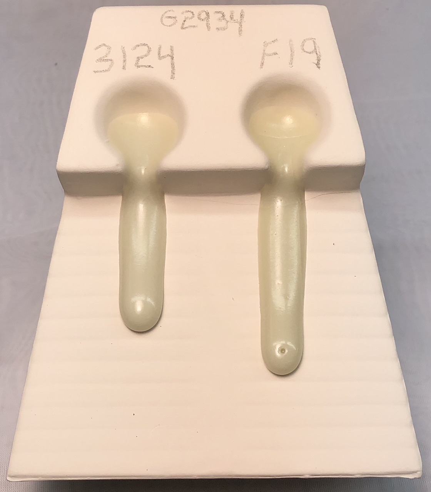
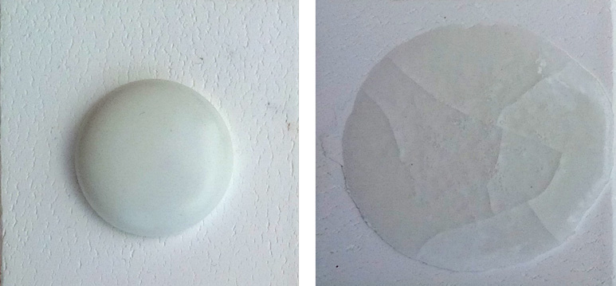

A Low Cost Tester of Glaze Melt Fluidity
A One-speed Lab or Studio Slurry Mixer
A Textbook Cone 6 Matte Glaze With Problems
Adjusting Glaze Expansion by Calculation to Solve Shivering
Alberta Slip, 20 Years of Substitution for Albany Slip
An Overview of Ceramic Stains
Are You in Control of Your Production Process?
Are Your Glazes Food Safe or are They Leachable?
Attack on Glass: Corrosion Attack Mechanisms
Ball Milling Glazes, Bodies, Engobes
Binders for Ceramic Bodies
Bringing Out the Big Guns in Craze Control: MgO (G1215U)
Can We Help You Fix a Specific Problem?
Ceramic Glazes Today
Ceramic Material Nomenclature
Ceramic Tile Clay Body Formulation
Changing Our View of Glazes
Chemistry vs. Matrix Blending to Create Glazes from Native Materials
Concentrate on One Good Glaze
Copper Red Glazes
Crazing and Bacteria: Is There a Hazard?
Crazing in Stoneware Glazes: Treating the Causes, Not the Symptoms
Creating a Non-Glaze Ceramic Slip or Engobe
Creating Your Own Budget Glaze
Crystal Glazes: Understanding the Process and Materials
Deflocculants: A Detailed Overview
Demonstrating Glaze Fit Issues to Students
Diagnosing a Casting Problem at a Sanitaryware Plant
Drying Ceramics Without Cracks
Duplicating Albany Slip
Duplicating AP Green Fireclay
Electric Hobby Kilns: What You Need to Know
Fighting the Glaze Dragon
Firing Clay Test Bars
Firing: What Happens to Ceramic Ware in a Firing Kiln
First You See It Then You Don't: Raku Glaze Stability
Fixing a glaze that does not stay in suspension
Formulating a body using clays native to your area
Formulating a Clear Glaze Compatible with Chrome-Tin Stains
Formulating a Porcelain
Formulating Ash and Native-Material Glazes
G1214M Cone 5-7 20x5 glossy transparent glaze
G1214W Cone 6 transparent glaze
G1214Z Cone 6 matte glaze
G1916M Cone 06-04 transparent glaze
Getting the Glaze Color You Want: Working With Stains
Glaze and Body Pigments and Stains in the Ceramic Tile Industry
Glaze Chemistry Basics - Formula, Analysis, Mole%, Unity
Glaze chemistry using a frit of approximate analysis
Glaze Recipes: Formulate and Make Your Own Instead
Glaze Types, Formulation and Application in the Tile Industry
Having Your Glaze Tested for Toxic Metal Release
High Gloss Glazes
Hire Us for a 3D Printing Project
How a Material Chemical Analysis is Done
How desktop INSIGHT Deals With Unity, LOI and Formula Weight
How to Find and Test Your Own Native Clays
I have always done it this way!
Inkjet Decoration of Ceramic Tiles
Is Your Fired Ware Safe?
Leaching Cone 6 Glaze Case Study
Limit Formulas and Target Formulas
Low Budget Testing of Ceramic Glazes
Make Your Own Ball Mill Stand
Making Glaze Testing Cones
Monoporosa or Single Fired Wall Tiles
Organic Matter in Clays: Detailed Overview
Outdoor Weather Resistant Ceramics
Painting Glazes Rather Than Dipping or Spraying
Particle Size Distribution of Ceramic Powders
Porcelain Tile, Vitrified Tile
Rationalizing Conflicting Opinions About Plasticity
Ravenscrag Slip is Born
Recylcing Scrap Clay
Reducing the Firing Temperature of a Glaze From Cone 10 to 6
Setting up a Clay Testing Program in Your Company or Studio
Simple Physical Testing of Clays
Single Fire Glazing
Soluble Salts in Minerals: Detailed Overview
Some Keys to Dealing With Firing Cracks
Stoneware Casting Body Recipes
Substituting Cornwall Stone
Super-Refined Terra Sigillata
The Chemistry, Physics and Manufacturing of Glaze Frits
The Effect of Glaze Fit on Fired Ware Strength
The Four Levels on Which to View Ceramic Glazes
The Majolica Earthenware Process
The Potter's Prayer
The Right Chemistry for a Cone 6 Magnesia Matte
The Trials of Being the Only Technical Person in the Club
The Whining Stops Here: A Realistic Look at Clay Bodies
Those Unlabelled Bags and Buckets
Tiles and Mosaics for Potters
Toxicity of Firebricks Used in Ovens
Trafficking in Glaze Recipes
Understanding Ceramic Materials
Understanding Ceramic Oxides
Understanding Glaze Slurry Properties
Understanding the Deflocculation Process in Slip Casting
Understanding the Terra Cotta Slip Casting Recipes In North America
Understanding Thermal Expansion in Ceramic Glazes
Unwanted Crystallization in a Cone 6 Glaze
Using Dextrin, Glycerine and CMC Gum together
Volcanic Ash
What is a Mole, Checking Out the Mole
What is the Glaze Dragon?
Where do I start in understanding glazes?
Why Textbook Glazes Are So Difficult
Working with children
What Determines a Glaze's Firing Temperature?
Description
The oxides contributed by glaze materials determine its chemistry. The chemistry is the main factor determining melting behaviour. But the particle sizes, shapes and mineralogies also come in to play.
Article
Glazes do not "melt" at one particular temperature, rather, they 'soften' over a range. The width of that range depends on the recipe. Even when completely melted, glazes can continue to "hang on" for many more cones. They can even be suitable when they do begin to run (e.g. crystallines or for decorative purposes). The rate of cool also often affects how glazes fire.
Consider glaze materials. A crystalline material has a specific melting temperature at which the regular lattice structure is broken, Gerstley Borate is an example. A glass, on the other hand, has a much more random molecular structure, called amorphous - frits are examples. The molecular bonds holding them together vary in their strength to resist increasing temperature, the result is that they soften gradually over a sometimes wide temperature range. Glaze recipes are made from powdered materials that are amorphous, crystalline, or both (e.g. feldspar). They don't just behave differently as temperature rises - they interact. And what about eutectics, textbooks often mention them? Unless you are a technician at frit company, you don't likely need to worry about them.
Individual materials in a recipe also have a diversity of particle sizes and shapes. The materials having finer sizes will melt much more quickly (akin to how fast flakes of wax melt compared to a chunk). The maximum impact of fineness is when the early-melters are fine. That being said, later-melters that are fine will more readily dissolve into an evolving glass created by others. Of course, the speed of the firing is important, it needs to be slow enough to permit anything that will melt or dissolve to do so. As you might imagine, the same glaze that melts well with sufficient time will do the opposite with insufficient time, producing a matrix of unmelted particles held together by a glassy glue.
Matte glazes have a more interesting melting story. Of course, a stoney matte may simply be under-melted. But a functional matte, one that resists cutlery marking, is well-melted. And well-cooled: Mattes often depend on a specific cooling rate to have time to develop their surface. The greater melt fluidity provided by more time and temperature in the kiln affords more molecular mobility. Given sufficient freedom to move, the molecules will arrange themselves in an increasingly preferred matrix, cooling will freeze this as a more crystalline and matte-surfaced solid. Some fluxing oxides, like MgO supplied by talc or dolomite, act as refractories until a specific temperature where they suddenly flow and become active. Glazes frozen in this range have a distinctive mottled effect resulting from the MgO actively flowing and 'feathering' itself in a phase-separated melt.
Melting temperature is most profoundly affected by the amount and types of fluxes present. CaO, MgO are active at high temperatures but are refractory at low temperatures. By contrast, B2O3 and Li2O are powerful and can melt a glaze anywhere. Na2O teams up with others to melt well at very low temperatures yet can still be found in almost every high temperature glaze. ZnO and BaO have their own stories. These fluxes are sourced from raw materials and frits, their identity, relative proportions coupled with the melting character of the materials supplying them determine the way the glaze melts.
Consider also your clay body's optimal maturing point. As a glaze becomes more and more fluid, it begins to react with the body to form an interface of layers of intermediate compositions. Vitrified bodies react better. The better this interface develops, the stronger and more functional the ware will be. An ideal clay-glaze combination is one where both reach optimal condition at the same time. Remember, also, that optimal body firing temperature is the needed compromise between fired strength, cost and resistance to warp in the kiln.
You can test melt fluidity, we have done it for years (see example below). Our melt flow tester calibrates such that flows half way down or farther are best.
Can you reformulate a glaze to melt better, fire lower? Likely yes. The first hurdle to get over is how you see a glaze, as a recipe or a formula. Recipes have powdered materials, oxide formulas have oxides. Fired glazes express their chemistry as proportions of oxides, not materials. So, what is different about the chemistry of high and medium temperature glazes? Following is an example of approximate oxide ranges for Orton cone 6 and 10 lead-free standard whiteware and pottery glazes (the figures to follow compare the unity formulas).
| Cone 6 | Cone 10 | |
| CaO | 0.2-0.5 | 0.4-0.7 |
| ZnO | 0.1-0.3 | 0-0.3 |
| BaO | 0.1-0.3 | 0-0.3 |
| MgO | 0-0.2 | 0-0.4 |
| KNaO | 0.1-0.3 | 0.2-0.4 |
| Al2O3 | 0.2-0.3 | 0.3-0.5 |
| B2O3 | 0.3-0.6 | 0.1-0.3 |
| SiO2 | 2-3 | 3-5 |
What is different? Mainly it is the amount of SiO2, B2O3 and Al2O3. Notice that the Al2O3 and SiO2 are about one third less for cone 6 than cone 10. And that there is much more B2O3 (actually the vast majority of cone 10 glazes have no B2O3 at all).
Related Information
Why do these cone 04 and 6 clear glazes have so similar a chemistry?

This picture has its own page with more detail, click here to see it.
The glaze on the left (as shown in my account at insight-live.com) is a crystal clear at cone 04. The high frit content minimizes micro-bubbles. The high B2O3 melts it very well (this has 0.66 B2O3, that is three times as high as a typical cone 6 glaze). The recipe on the right is the product of a project to develop a low-thermal-expansion fluid-melt transparent for cone 6 (with added colorants fluid melts produce brilliant and even metallic results and they variegate well). While the balance of fluxes (the red numbers in the formula) is pretty different, look how similar the B2O3, Al2O3 and SiO2 levels are (yellow, red and blue backgrounded numbers in the formula), these mainly determine the melting range. That means that a fluid-melt cone 6 glaze may actually be just a low temperature glaze being overfired to cone 6.
A frit softens over a wide temperature range

This picture has its own page with more detail, click here to see it.
Raw materials often have a specific melting temperature (or they melt quickly over a narrow temperature range). We can use the GLFL test to demonstrate the development of melt fluidity between a frit and a raw material. On the left we see five flows of boron Ferro Frit 3195, across 200 degrees F. Its melting pattern is slow and continuous: It starts flowing at 1550F (although it began to turn to a glass at 1500F) and is falling off the bottom of the runway by 1750F. The Gerstley Borate (GB), on the other hand, goes from no melting at 1600F to flowing off the bottom by 1625F! But GB has a complex melting pattern, there is more to its story. Notice the flow at 1625F is not transparent, that is because the Ulexite mineral within GB has melted but its Colemanite has not. Later, at 1700F, the Colemanite melts and the glass becomes transparent. Technicians call this melting behaviour "phase transition", that does not happen with the frit.
Cooling rate drastically affects the appearance of this glaze

This picture has its own page with more detail, click here to see it.
This is the G2934Y satin matte glaze recipe with Mason 6600 black stain (6%). The piece on the left was fired using the C6DHSC firing schedule (drop-and-hold at 2100F then 150F/hr to 1400F). The one on the right was fired using the PLC6DS schedule (drop-and-hold at 2100F then free-fall from there). The slow cooling rate gives the glaze on the left time to crystallize, creating a stony matte (and altering the colour accordingly). My kilns are generally lightly loaded, so free-fall firings drop rapidly, producing the effect on the right. This phenomenon is a characteristic of high MgO glazes (ones having significant dolomite, talc, Ferro frit 3249). To vary, by recipe, the degree of matteness, we also make this glaze using a blend of G2934 base (which fires even more matte on slow-cool) and G2926B glossy (starting with and 80:20 matte:glossy mix). Of course, this type of glaze would not be practical in an industrial shuttle kiln, pieces would fire differently depending upon their placement on the cars.
G2934 using Fusion Frit F-19 instead of Ferro 3124

This picture has its own page with more detail, click here to see it.
G2934 is a popular recipe and there has been alarm recently because of the difficulty in getting the Ferro frit and the variation in its quality in recent years. This motivated us to get a supply of the Fusion equivalent, F-19. When doing substitutions like this we do testing in glazes and with melt fluidity tests - like this GLFL test.
These two frits have one difference in the chemistry: Al2O3.

This picture has its own page with more detail, click here to see it.
These two boron frits (Ferro 3124 left, 3134 right) have almost the same chemistry. But there is one difference: The one on the right has no Al2O3, the one on the left has 10%. Alumina plays an important role (as an oxide that builds the glass) in stiffening the melt, giving it body and lowering its thermal expansion, you can see that in the way these flow when melting at 1800F. The frit on the right is invaluable where the glaze needs clay to suspend it (because the clay can supply the Al2O3). The frit on the left is better when the glaze already has plenty of clay, so it supplies the Al2O3. Of course, you need to be able to do the chemistry to figure out how to substitute these for each other because it involves changing the silica and kaolin amounts in the recipe also.
Links
| Articles |
Reducing the Firing Temperature of a Glaze From Cone 10 to 6
Moving a cone 10 high temperature glaze down to cone 5-6 can require major surgery on the recipe or the transplantation of the color and surface mechanisms into a similar cone 6 base glaze. |
| Articles |
A Textbook Cone 6 Matte Glaze With Problems
Glazes must be completely melted to be functional, hard and strong. Many are not. This compares two glazes to make the difference clear. |
| Glossary |
Melting Temperature
The melting temperature of ceramic glazes is a product of many complex factors. The manner of melting can be a slow softening or a sudden liquifying. |
| Glossary |
Flux
Fluxes are the reason we can fire clay bodies and glazes in common kilns, they make glazes melt and bodies vitrify at lower temperatures. |
 PayPal | No tracking, No ads, No paywall, No transient content! Just organized, concise information constantly updated and improved. Was this helpful? Consider supporting me. |
| By Tony Hansen Follow me on        |  |
Got a Question?
Buy me a coffee and we can talk 

https://digitalfire.com, All Rights Reserved
Privacy Policy